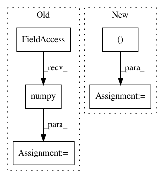

1b781f694884d17874706dd1a51a36e08240c8c1,tests/depthwise_conv2d.py,,,#,33
Before Change
k_model = pytorch_to_keras(model, input_var, (inp, inp, inp,), verbose=True)
pytorch_output = output.data.numpy()
keras_output = k_model.predict(input_np)
error = np.max(pytorch_output - keras_output)
print(error)
After Change
// This isn"t a depthwise convolution, so shouldn"t be detected as such
non_dw_model = TestConv2dNonDepthwise(inp)
output = non_dw_model(input_var)
k_model = pytorch_to_keras(non_dw_model, input_var, (inp, inp, inp,), verbose=True)
check_error(output, k_model, input_np)
print("Max error: {0}".format(max_error))
In pattern: SUPERPATTERN
Frequency: 3
Non-data size: 5
Instances
Project Name: nerox8664/pytorch2keras
Commit Name: 1b781f694884d17874706dd1a51a36e08240c8c1
Time: 2018-09-05
Author: sean@wayve.ai
File Name: tests/depthwise_conv2d.py
Class Name:
Method Name:
Project Name: kevinzakka/recurrent-visual-attention
Commit Name: 520e8fb57b890a7249334d9e90c9ad209d0b849f
Time: 2018-02-10
Author: kevinarmandzakka@gmail.com
File Name: modules.py
Class Name: retina
Method Name: extract_patch
Project Name: hassony2/kinetics_i3d_pytorch
Commit Name: 1f3da600c20e3376b0bb396bba482b1e90b7883c
Time: 2017-11-24
Author: yana.hasson@inria.fr
File Name: i3nception_tf.py
Class Name:
Method Name: